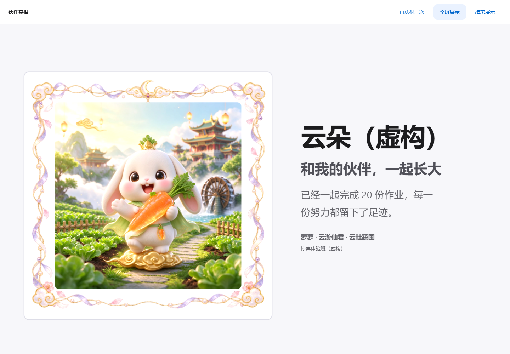
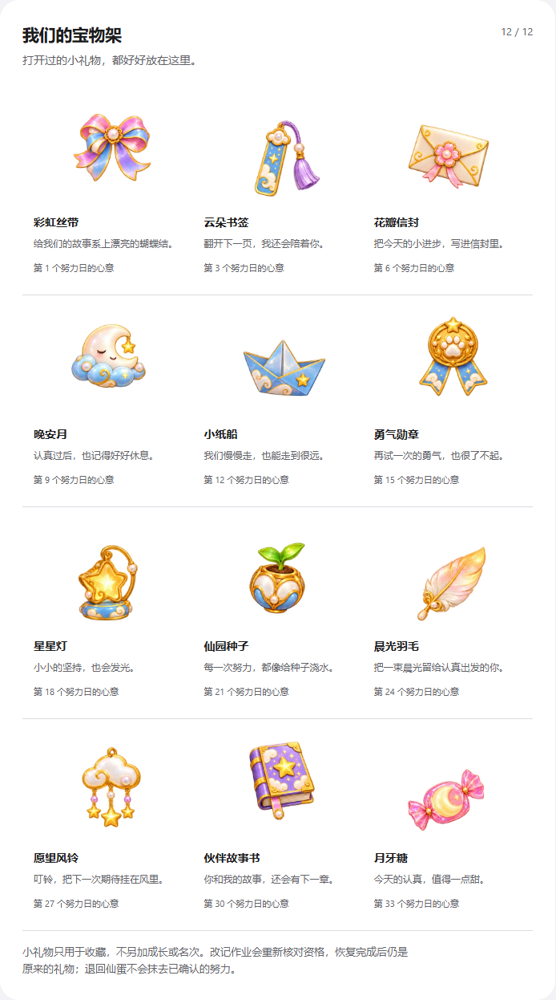

先认养，再开始
粘贴班级名单，为孩子选择伙伴。100只仙宠各有名字、喜欢的食物和四阶段原画。
孩子认养一只仙宠。
老师确认作业完成，喂它一口喜欢的食物。
从仙蛋到仙官，把一学期的努力慢慢养大。
给小学班主任 · 老师一台电脑操作 · 学生无需拿手机
这里是虚构互动示意；正式版由老师确认作业、按成长值解锁形态。
粘贴班级名单，为孩子选择伙伴。100只仙宠各有名字、喜欢的食物和四阶段原画。
逐人确认，也能批量操作。待补交有清单，补齐后继续出发。宠物成长始终由老师把关。
努力徽章、小收藏、伙伴来信和课堂大屏；期末再把专属宠物做成可以拿在手里的卡片。
作业是否达标、考试礼包发给谁、期末正式名次，都由老师确认。饥饿和回蛋按教学日计算，周末与老师设置的假期不计时。
一份作业不会重复奖励，成长值不会替代考试名次。孩子看到陪伴，老师保留判断。
亲手试试喂食、礼包和成长册 →
愿每一份认真，都被温柔记住。
老师录入正式名次后，前10名可以获得自己的宠物珍藏卡。每次选择一位学生，只输出一张A4卡；完整终极原画占据主要画面。
可以写宠物昵称、具体寄语和颁发日期。卡上不印分数或名次。
打开一张真实打印样例 →示例含虚构学生。原画1024px，实际效果取决于纸张和打印设备；支持当前预览替换本地高清同宠物原图。
星辉与云游进阶装扮、12件不重复的小收藏、8封事件来信，还有摸摸伙伴时的可爱回应。
小收藏记录已经确认的努力，既不另加分，也不更改学校排名。

免费体验班收录6只伙伴，用虚构学生演示主要流程。教师本地版提供100只宠物、400张成长原画和完整班级工具。
先看看学生认养、作业喂食、礼包、成长与卡片。
咨询邮箱：273916641@qq.com
联系电话：18510860703
先确认电脑适用性、交付方式和售后，再付款；本页不收款、不收集学生信息，发出咨询不代表已下单。
不需要。主要操作由老师在电脑上完成，可以用教室大屏展示伙伴和表扬。
保存在这台电脑、这个浏览器内。请定期导出班级备份；清理浏览器数据、换浏览器或换电脑时，需要用备份恢复。本地版不自动跨设备同步。
老师确认补交后可以继续喂食；三教学日饥饿回蛋的默认规则可调整。过往已确认的努力与收藏保留。老师应结合孩子的具体情况使用工具。
它是课堂激励与陪伴工具，成绩效果需要真实班级使用后验证。考试奖励和学校正式名次由老师确认，软件不自动替老师评价学生。